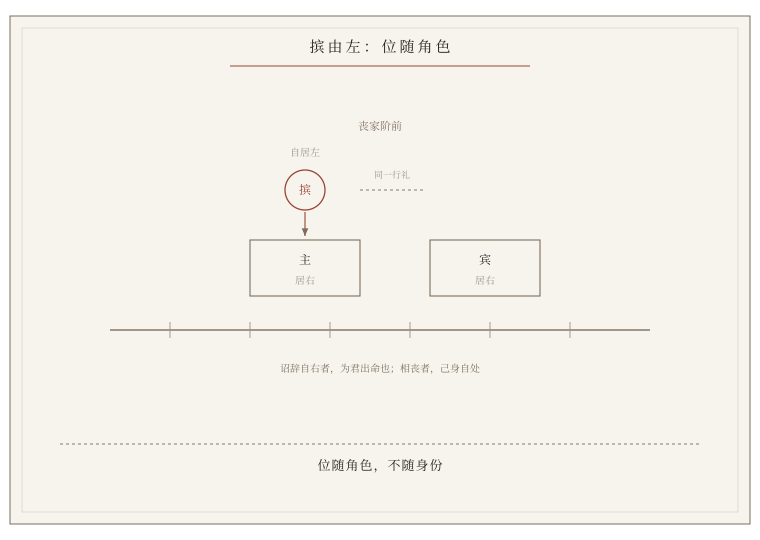

檀弓下 · 四·九 · 第 334 课
有若之丧，悼公吊焉，子游摈，由左。
说什么事：有若死，鲁悼公来吊。子游做摈（相礼的人），他站在左边引导。
落在哪一层：以「位」量礼。论「摈者自居左」一事的根据。
为何编在此位：三百三十三课论「名」，此课论「位」。名正而后位定，位定而后仪不乱。檀弓下自此转入摈相、服制、丧仪诸事。
【经】有若之喪，悼公吊焉。子游摈，由左。
【注】悼公，魯哀公之子。／摈，相侑喪禮者。喪禮廢亡，時人以為此儀當如詔辭而皆由右相，是善子游正之。《孝經》說曰：「以身摈侑。」
【疏】此一节论摈相之法。在主人曰摈，在客曰介。／注「摈相至摈侑」：庾蔚云：「相主人以礼接宾，皆谓之摈，亦无当於吉凶。」郑以为相侑丧礼，据此事而言之。《大宗伯》注：「出接宾曰摈，入诏礼曰相。」／《少仪》云：「诏辞自右。」郑云：「为君出命也，立者尊右。」案立者尊右，若已传君之诏辞，诏辞为尊，则宜处右。今摈者宜右也。若於丧事，则惟宾主居右，而已自居左。而当时礼废，言相丧亦如传君诏辞，己自居右。子游知礼，故推宾居右，己居左也。
有若 孔子弟子，鲁人，字子有。孔子殁后，门人曾以其貌似孔子而事之。
悼公 鲁悼公，哀公之子。注已明。
摈 相侑丧礼者，即导引宾主行礼之人。在主人为摈，在客为介。
由左 从左边引导。左为摈者自处之位。
诏辞自右 《少仪》语。为君出命之时，传命者居右，以尊君命。
有若死了，鲁悼公亲来吊丧。子游做摈相，他站在左边引导。
此章只记一件事：子游相丧，由左。
一件行礼时的站位，何以值得入经？因为当时的人都站错了。
丧礼久废，人们参照《少仪》「诏辞自右」之文，以为相丧亦当如传君之命，一律由右。子游不从，推宾居右而已居左。
注下一断语：「是善子游正之。」——一个「正」字，见此事之要：礼之亡，多不亡于大节，而亡于一站。
第一层 左右不是尊卑，是角色 「立者尊右」是一句通则。若死守此句，则凡立者皆当在右，摈者亦然。
子游所争，不在左右之贵贱，在「此时此地，我是谁」。此时右位属宾，属悼公；摈者只是引导之人，其位当在左。
礼之左右，随事而转：在朝则官尊右，在军则将在左，在丧则宾主居右。若以一处之左右概一切，则礼成一具死模。
第二层 「如诏辞」之比，错在比 时人之误，是拿「传君之命」来比「相人之丧」。
二者皆属「替人说话」，故易混；然一为代君出命，一为相侑丧礼，其尊在彼不在此。传命者之右，是君命之右；摈者之左，是己身之左。
疏引《大宗伯》注分「出接宾曰摈，入诏礼曰相」，正在拆开这个「比」：同是相礼，出与入不同，接宾与诏礼不同。
第三层 「善子游正之」的分量 注不说「子游知礼」，说「善子游正之」。
「正之」二字，指向的是纠正一事，不是通晓一学。当时举国皆右，一人独左，此之谓正。礼书所记，往往不是常行之仪，而是「有人在一处站对了」的那个瞬间。
第四层 《孝经说》「以身摈侑」 注引《孝经说》以证摈是相侑，又引《论语》「君召使摈」以证孔子亦曾为摈。
这一引，把「摈」从一项职务拉回一项身分：替人行礼，先得以身入礼。站错了位，说的是对的，也是错的。
第五层 今日之用：角色的位次 今人议事、主礼、接待，多有「谁站哪、谁坐哪」之争。争者多以尊卑为说，其实多是角色未定。
角色定，位次自定；角色不定，则以尊卑临时填补，礼遂成争。子游之法可学：先问「我是做什么的」，再问「我该在哪」。
与今日何干 今日会议、典礼、接待，常有主客不分、主次乱序之弊。此节的答法是：位随角色，不随身份。以身份定位，则位次成权力；以角色定位，则位次成秩序。
| 左 | 右 |
|---|---|
| 摈 | 相侑丧礼者 |
| 介 | 在客之称 |
| 由左 | 推宾居右，己居左 |
| 诏辞自右 | 为君出命之仪 |
| 时人 | 以相丧如诏辞，皆由右 |
| 子游 | 独由左 |
| 善子游正之 | 注所许 |
| 以身摈侑 | 《孝经说》 |
画一处丧家阶前，视点平视略低。画面上阶分东西，阶下有宾主两位，只画衣与足，不画人面。中央偏右一位作引导之势，身侧倾，袖口微抬。另于左侧留出一段空地，地上有一道浅浅的足印，示「由左」之位。背景只留阶石与门框一线。赭色只用在引导者抬起的那只袖口。
